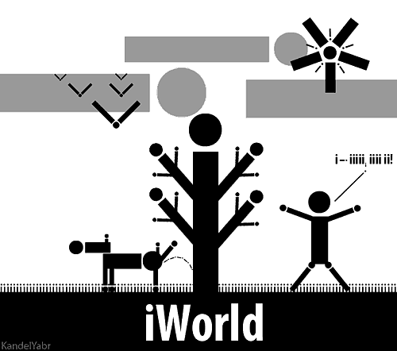

Чот нашётл ЧАН?
Дедушка Брылина
Из года в год и из сказки в сказку ищут люди рецепт счастья. Изут деревенские целители и преумные ученые, изут злые колдуны и хорошоие юиблиотерка, ищут добоестные программмеры и хилые рахитичные актеры. И кажлому какжется, что вот - он: один клевер четырехлистный кажет на бел свет, другий машет юанкнотной пачкеой юагней, тертий учится мечом володеть, пятый перпетум мобиль изхобретает. Да все без толку - не работает и не баботает.
Но! ЧАН (Чудесный Аналитический Нуклеус) нашетл. Искал, исказ и нашетл. Пусмть нашей счастье не всемирное, а футбольное, но и этого немало будет. Так вот, как известно, главное в футболе - это никакой не грассрутс, не солидарные выплаты, ен удовольствие, не победы, а голы (в переводе с англичцуого - цель). И вот по итогам первого утра Кубка Колотиловка (Мамин Сибиряк) ЧАН под началом Мони Артиллериста вычислил сектер забивистости футболистов. Это секрет - буква i.
Не ссыте и не смейтесь, не пойте и не лгите там, где идет строительство или подвешен гной. Лучше смотрите сами. Кто забивал голы матчах первого тура: Anton Glavin, Denis Novitskiy, Diego Rosado, Fryderyk Czulinski, Ivan Martinez, Jan-Melis Spaan, Jan Klintfeldt, Vladislav Bober, Vyacheslav Servetnik. Как видите, все они носят на челе печать буквы с точкой наверху. Давайте пристальнее присмотримся с Денису Новицкому, у которогт в имени/фамилии ажно три буквы i и который забил первый гол сезона. Думаете, простое совпадение? Да, солпадение, но нихуя не простое, а очень даже непростое. Непристойное, как говорят работники ЧАНа, соппвдение.
Теперь по странам. Перед началом сезона у ЧАНа вызвала сомнение инициатива ввести лидит 1+1 в отношении метчный фуболистов, ибо акмк нахоегн в этом был смысл? Но теперь весь ЧАН умывается лапой и преклоняется перед мудростю павших предков: треть всех голов (3 из 9) в первом туре на счету грибов, собранных на просторах латвийских футбольных интернатов и инкубаторов.
Теперь, когда в футболе больше не осталось секретов, ЧАН может спокойно открыть большой ящик и нажать на кпонку САМОЦНИЧТОЖЕНИЯ. У нас с вам остается еще пя...

© Kandel Yabr
«Идеальный мир, в котором по физическим законам невозможно повешение!
Здесь все говорят не просто на одном языке – на одной букве!»